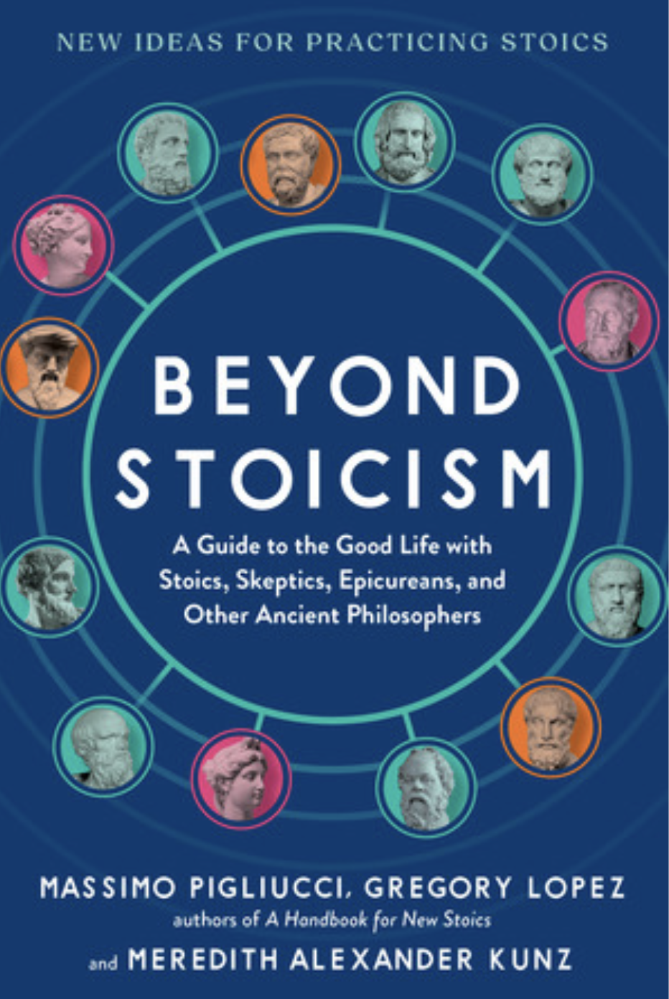
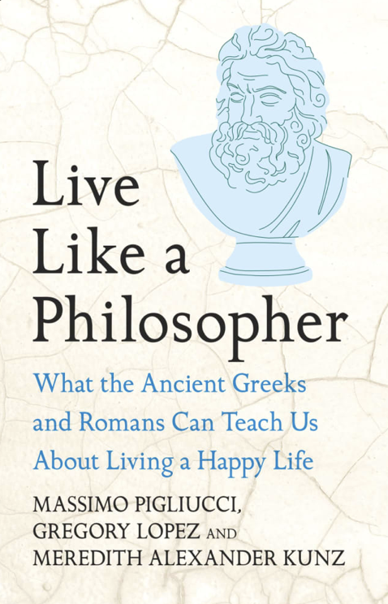

Beyond Stoicism
What is a good life? And how can we create that life in a world filled with uncertainty? Beyond Stoicism invites you to find your own answers to these big questions with help from thirteen of the most prominent Greco-Roman philosophers—many of whom inspired, or were inspired by, the Stoics.

Live Like a Philosopher
Live Like a Philosopher: What the Ancient Greeks and Romans Can Teach Us About Living a Good Life is the UK edition of Beyond Stoicism. It is a wide-ranging philosophical and practical guide to incorporating the wisdom of ancient philosophers into daily modern life.
